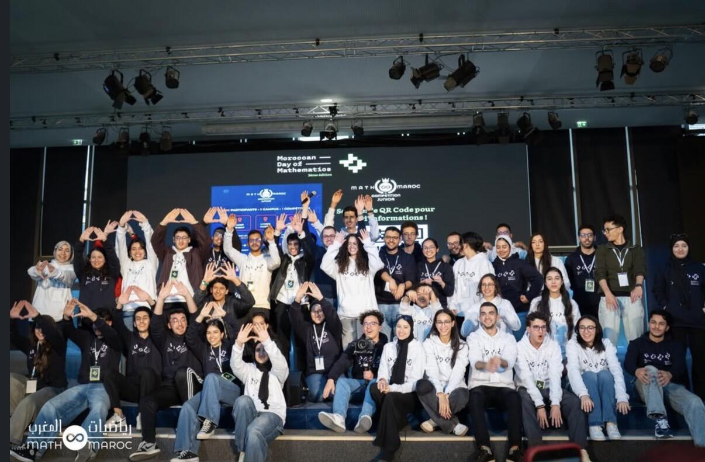
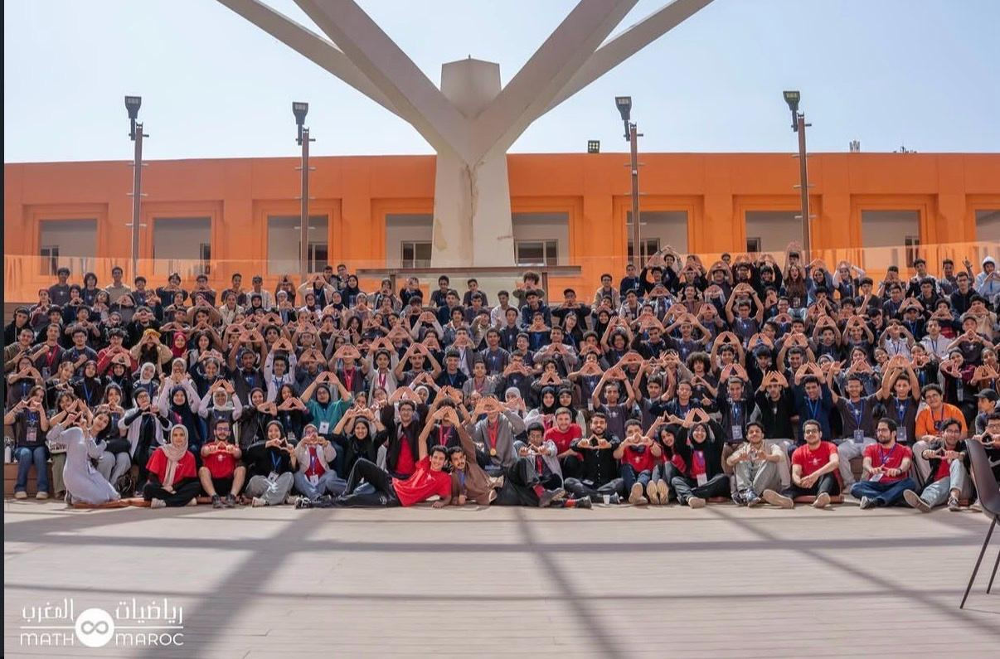

01
MDM (Moroccan Day of Mathematics) 2026
MDM est un événement dédié aux passionnés de mathématiques, comprenant plusieurs compétitions et activités enrichissantes.
Expérience associative
Organisation d'événements, communication digitale et accompagnement des participants autour des mathématiques.
Temps forts

MDM est un événement dédié aux passionnés de mathématiques, comprenant plusieurs compétitions et activités enrichissantes.

J'ai participé pendant 3 jours au MMC Junior (Math Maroc Competition), organisé par Maths&Maroc à l'UM6P de Benguerir.
Membre du pôle communication, j'ai assuré la couverture digitale de l'événement (création de contenu et stories). J'étais aussi point de contact des lycéens participants, en charge de leur accompagnement et de leurs déplacements sur le campus. L'événement incluait également des séances d'orientation académique.